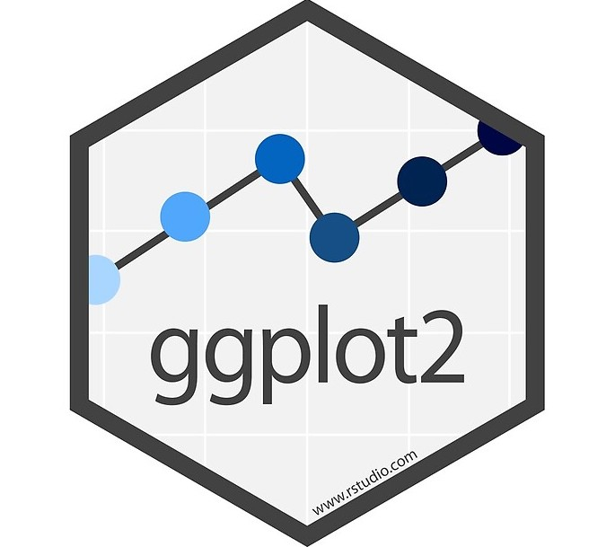

1 Spatial Data with ggplot2

In Geospatial Sciences we’re constantly working with spatial datasets that come in many different projections. We’ve previously shown how R can be used to read in spatial data, reproject spatial data, and resample spatial datasets. Once a spatial dataset can be stored in R as a data frame, we can use ggplot to plot it.
| Function | Description |
|---|---|
geom_sf() |
Adds geometry stored in a sf object to a ggplot |
coord_sf() |
Provides coordinate specifications for a ggplot |
geom_raster() |
Plots a data frame as a raster on a ggplot |
st_crs() |
Obtains projection information from an EPSG code |
geom_sf_label() |
adds label to an sf geometry |
scale_fill_gradientn() |
adds a density plot to a ggplot |
borders() |
Adds country borders to a ggplot |
coord_quickmap() |
Approximates projected lines for faster image creation |
colorRampPalette() |
Create custom color ramp palette |
brewer.pal() |
Grabs premade color palette from RColorBrewer |
grid.arrange() |
Function that allows you to organize multiple ggplot objects into the same window |
1.1 Simple Features
One package useful for spatial data in R is the sf package (short for simple features). It contains functions that perform equations that place uneven projections on a 2 dimensional computer screen. It can handle many projections and is built to work seamlessly with ggplot. For sample data, we’re also going to load ozmaps which contains maps of Australia.
## Linking to GEOS 3.8.1, GDAL 3.1.4, PROJ 6.3.1## Simple feature collection with 9 features and 1 field
## geometry type: MULTIPOLYGON
## dimension: XY
## bbox: xmin: 105.5507 ymin: -43.63203 xmax: 167.9969 ymax: -9.229287
## geographic CRS: GDA94
## # A tibble: 9 x 2
## NAME geometry
## <chr> <MULTIPOLYGON [°]>
## 1 New South Wales (((150.7016 -35.12286, 150.6611 -35.11782, 150.6373 -35.…
## 2 Victoria (((146.6196 -38.70196, 146.6721 -38.70259, 146.6744 -38.…
## 3 Queensland (((148.8473 -20.3457, 148.8722 -20.37575, 148.8515 -20.3…
## 4 South Australia (((137.3481 -34.48242, 137.3749 -34.46885, 137.3805 -34.…
## 5 Western Australia (((126.3868 -14.01168, 126.3625 -13.98264, 126.3765 -13.…
## 6 Tasmania (((147.8397 -40.29844, 147.8902 -40.30258, 147.8812 -40.…
## 7 Northern Territory (((136.3669 -13.84237, 136.3339 -13.83922, 136.3532 -13.…
## 8 Australian Capital … (((149.2317 -35.222, 149.2346 -35.24047, 149.2716 -35.27…
## 9 Other Territories (((167.9333 -29.05421, 167.9188 -29.0344, 167.9313 -29.0…oz_states is a simple feature which stores data like data frames but has a projection (proj4string), spatial extents, and polygon geometry. In other words, we have shapes on a map that are georeferenced and stored within a data frame that ggplot is great at working with. There are two columns - NAME and geometry. The NAME column is the name of the Australian State. The geometry specifies where the lines of the polygons are drawn (the state boundaries). So, let’s plot these polygons!

# if we declare mapping aesthetics, we can tell ggplot to fill the spatial features (australian states) based on the NAME column / variable - ggplot automatically chooses coloring for us if we don't specify
ggplot() +
geom_sf(data = oz_states, mapping = aes(fill = NAME)) +
coord_sf()
The function coord_sf allows to deal with the coordinate system, which includes both projection and extent of the map. By default, the map will use the coordinate system of the first layer that defines one (i.e. scanned in the order provided), or if none, fall back on WGS84 (latitude/longitude, the reference system used in GPS). Remember, our oz_states is a simple feature data frame that contains projection information. Thus, coord_sf is assuming we want the projection of oz_states - +proj=longlat +ellps=GRS80 +towgs84=0,0,0,0,0,0,0 +no_defs. We can specify our own crs argument if we want to override the assumed projection. If we set the crs argument to a valid PROJ4 string, we can accoimplish this. Let’s project our oz_states onto a Mollewide graph.
ggplot() +
geom_sf(data = oz_states, mapping = aes(fill = NAME)) +
coord_sf(crs = "+proj=moll +lon_0=0 +x_0=0 +y_0=0 +datum=WGS84 +units=m +no_defs") +
ggtitle("oz_states projected onto Mollewide ggplot")
We did not overwrite the data to this new projection. We simply performed a transformation on the fly to fit the data to a new grid. Instead of a PROJ4 string, we could use an EPSG code with the st_crs() function. Let’s not project our data onto a grid with EPSG code 3112.
ggplot() +
geom_sf(data = oz_states, mapping = aes(fill = NAME)) +
coord_sf(crs = st_crs(3112)) +
ggtitle("oz_states projected onto EPSG 3112")
st_crs() is that simple, just plug in the code and the function will grab the PROJ4 string for you. coord_sf has other options that are useful too such as x and y limits. Let’s go back to our regular projection of this data and show the limits in action.
ggplot() +
geom_sf(data = oz_states, mapping = aes(fill = NAME), show.legend = FALSE) +
coord_sf(xlim = c(140, 150), ylim=c(-44, -39.5)) +
geom_sf_label( data = oz_states, aes(label = NAME))
We also added geom_sf_label which adds a label to an sf geometry. In this case, we added the Tasmania name tag to the geometry.
1.2 Sea Surface Temperature ggplot
When it comes to spatial data, the raster package is our go-to library. After the data is translated to a dataframe and ready to plot, we’ll need the help of a package called mapproj which makes sense of some external maps that ggplot2 uses.
## Loading required package: maps## Loading required package: sp## Checking rgeos availability: FALSE
## Note: when rgeos is not available, polygon geometry computations in maptools depend on gpclib,
## which has a restricted licence. It is disabled by default;
## to enable gpclib, type gpclibPermit()## Loading required package: lattice## Loading required package: latticeExtra##
## Attaching package: 'latticeExtra'## The following object is masked from 'package:ggplot2':
##
## layerlibrary(RColorBrewer)
sstRast <- raster("/Users/james/Documents/Github/geog473-673/datasets/GOES_R_ROLLING_1DAY_20190814.nc")## Loading required namespace: ncdf4## class : RasterLayer
## dimensions : 774, 1111, 859914 (nrow, ncol, ncell)
## resolution : 0.018, 0.0181 (x, y)
## extent : -99.99915, -80.00115, 15.99378, 30.00318 (xmin, xmax, ymin, ymax)
## crs : +proj=longlat +datum=WGS84 +no_defs
## source : memory
## names : Sea.Surface.Temperature
## values : 25.86023, 34.9397 (min, max)
## time : 2019-08-14 16:30:43## x y Sea.Surface.Temperature
## 1 -99.99015 29.99413 NaN
## 2 -99.97215 29.99413 NaN
## 3 -99.95415 29.99413 NaN
## 4 -99.93615 29.99413 NaN
## 5 -99.91815 29.99413 NaN
## 6 -99.90015 29.99413 NaN# plot the raster
ggplot() +
geom_raster(data = df , aes(x = x, y = y, fill = Sea.Surface.Temperature)) +
coord_sf()
In this case, df is just a data frame - not an sf data frame. We need to use geom_raster in this case to plot a regular data frame as a raster. As for the projeciton, ggplot automatically guessed lat/long which in this case is correct. A better practice is to use the crs from the sstRast which contains all of the projection information.
## CRS arguments: +proj=longlat +datum=WGS84 +no_defs# plug in crs into the `coord_sf` function
ggplot() +
geom_raster(data = df , aes(x = x, y = y, fill = Sea.Surface.Temperature)) +
coord_sf(crs=crs(sstRast))
The georeferenced data is properly placed. Let’s now turn our attention to the coloring of the data. We can use the RColorBrewer package to create our own color palettes. Also, becuase we’re in lat/long projection, we’re going to use coord_quickmap instead of coord_sf. This function approximates geolocated lines for faster plotting. This can be used in lat/long projected data close to the equator.
# now let's use a better colorscheme
jet.colors <- colorRampPalette(c("#00007F", "blue", "#007FFF", "cyan", "#7FFF7F", "yellow", "#FF7F00", "red", "#7F0000"))
ggplot() +
geom_raster(data = df , aes(x = x, y = y, fill = Sea.Surface.Temperature)) +
scale_fill_gradientn(colors = jet.colors(7), limits = c(28, 33)) +
coord_quickmap()
# now let's add borders using the borders function
ggplot() +
geom_raster(data = df , aes(x = x, y = y, fill = Sea.Surface.Temperature)) +
scale_fill_gradientn(colors = jet.colors(7), limits = c(28, 33)) +
borders(fill="white", xlim = c(-100,-80), ylim=c(16,30),alpha = 0.5) +
coord_quickmap(xlim = c(-100,-80), ylim=c(16,30))
Let’s get rid of the expanded area beyond the raster domain using the expand=FALSE argument in coord_quickmap()
ggplot() +
geom_raster(data = df , aes(x = x, y = y, fill = Sea.Surface.Temperature)) +
scale_fill_gradientn(colors = jet.colors(7), limits = c(28, 33)) +
borders(fill="white", xlim = c(-100,-80), ylim=c(16,30),alpha = 0.5) +
coord_quickmap(xlim = c(-100,-80), ylim=c(16,30),expand = FALSE)
1.3 R Color Brewer Palettes
There are a number of pre-made color palettes from RColorBrewer. Here is a list.

Let’s plot using a Yellow-Orange-Red palette and a white NA value
cols <- brewer.pal(9, "YlOrRd") # maximum number of colors in palette YlOrRd is 9
pal <- colorRampPalette(cols)
ggplot() +
geom_raster(data = df , aes(x = x, y = y, fill = Sea.Surface.Temperature)) +
scale_fill_gradientn(colors = pal(20), limits = c(25, 35),na.value = "white") +
borders(fill="white", xlim = c(-100,-80), ylim=c(16,30),alpha = 0.5) +
coord_quickmap(xlim = c(-100,-80), ylim=c(16,30),expand = FALSE) 
1.3.1 Multi Plot ggplot
Multiple Plots in one window is possible with ggplot2 but is done with a different method. Remember how we explicitly named ggplot2 instances in the previous tutorial? We must do that again in order to achieve the results we want. Let’s split up the image above into West Gulf of Mexico and East Gulf of Mexico.
library(ggplot2)
library(grid)
library(gridExtra)
p1 = ggplot() +
geom_raster(data = df , aes(x = x, y = y, fill = Sea.Surface.Temperature), show.legend=FALSE) +
scale_fill_gradientn(colors = pal(20), limits = c(25, 35),na.value = "white") +
borders(fill="white", xlim = c(-100,-90), ylim=c(16,30),alpha = 0.5) +
coord_quickmap(xlim = c(-100,-90), ylim=c(16,30),expand = FALSE)
p2 = ggplot() +
geom_raster(data = df , aes(x = x, y = y, fill = Sea.Surface.Temperature), show.legend=FALSE) +
scale_fill_gradientn(colors = pal(20), limits = c(25, 35),na.value = "white") +
borders(fill="white", xlim = c(-90,-80), ylim=c(16,30),alpha = 0.5) +
coord_quickmap(xlim = c(-90,-80), ylim=c(16,30),expand = FALSE)
# use the grid.arrange function from grid and gridExtra to plot our 2 ggplots in the same window
grid.arrange(p1,p2, ncol=2, nrow=1)
grid.arrange takes ggplot objects and plots them onto a window with specified rows and columns. Here we wanted these two separate plots side by side.
#Assignment:
Download
treecov.ncfrom the datasets folderFor South America and Africa, plot the tree cover variable using
ggplot2. Use a green color theme fromRColorBrewer. Add borders.Place each
ggplotnext to each other in one plot window usinggrid.arrange.Submit resulting image to UD Canvas.
Your final product should look something like…

1.4 Extra Credit - 2 Points
Using the data above, approximate the average tree cover for South America and Africa (extents don’t have to be exact, just generally)
Plot the same domains above but this time color each continent (yes, the whole thing) based on the average tree cover. For example, if one of the continent has an average tree cover of 30%, the entire continent would be red based on the colorscale you choose where 30% is red.
Submit plot and code to canvas